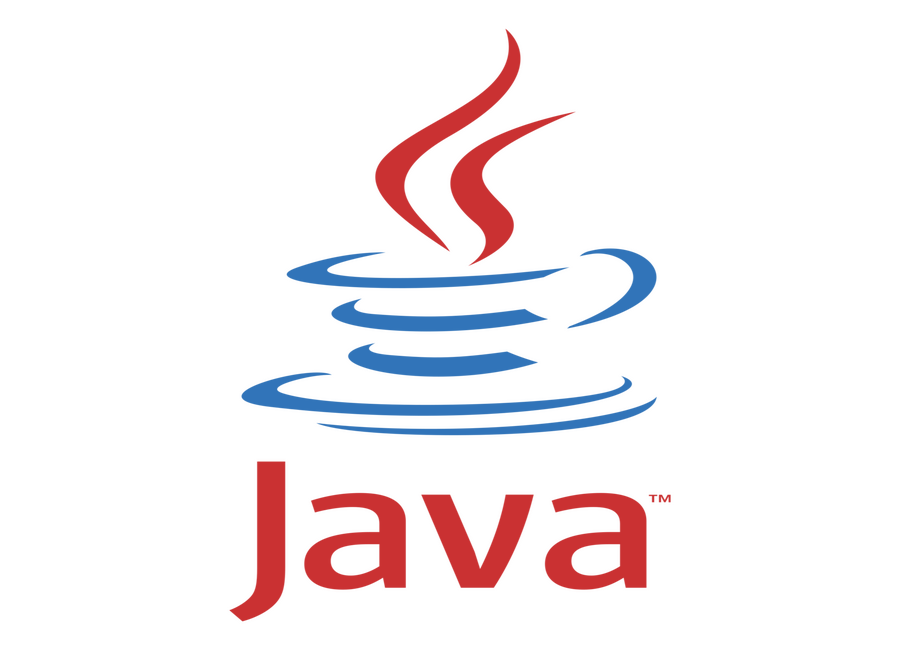
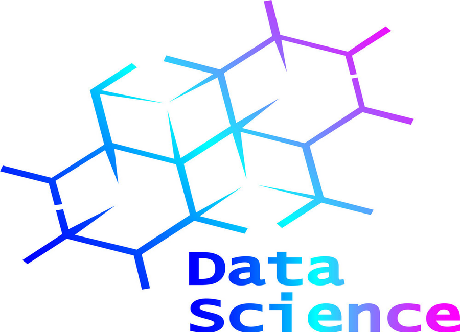

Computer Engineer - Mathematician - Full Stack Developer - Data Scientist
Portfolio


Education
Certificate of Continuing Education in Computer Engineering
Toronto Metropolitan University
Bachelor of Arts, Major in Mathematics
Canadian Mennonite University, Winnipeg
Bachelor Degree in Computer Engineering
Polytechnic University of Tirana
×
About
Greetings! I'm Arnold, a passionate and versatile individual originally from Permet, Albania.
I earned my Bachelor's degree in Computer Engineering in Tirana, the capital of Albania, setting
the foundation for my journey into the dynamic world of technology.
Seeking to broaden my horizons, I ventured across continents to pursue a Bachelor of Arts with a
major in Mathematics and a minor in Theology in the dynamic yet famously known as 'Winterpeg,' Manitoba.
This unique blend of disciplines not only honed my analytical skills but also fostered a holistic approach to
problem-solving.
Continuing my educational pursuits, I further specialized in Computer Engineering through the School
of Continuing Education at Toronto Metropolitan University. This experience enriched my knowledge and skills,
providing me with a comprehensive understanding of the evolving landscape of computer engineering.
My academic journey has equipped me with a strong mathematical foundation, emphasizing my capacity
as a quick learner and a dedicated worker. I thrive on overcoming challenges and possess excellent
communication skills, making collaboration seamless and effective.
Beyond my professional endeavors, I am an avid enthusiast of history, finding joy in unraveling
the tales of the past. Swimming is not just a physical activity for me but a means of relaxation
and rejuvenation. Moreover, I am deeply committed to community service, finding fulfillment in
contributing to the well-being of those around me.
I am always open to new opportunities and challenges, driven by a perpetual curiosity to learn
and grow. Thank you for visiting my portfolio, and I look forward to connecting with you!
As a passionate and detail-oriented computer engineering student with
a focus on Java development, I am excited to present a collection of projects that
highlight my expertise in various aspects of Java programming.
JavaFX Applications: Explore an engaging JavaFX application that
demonstrate my proficiency in creating interactive and visually appealing user interfaces.
This project showcase my dedication to delivering seamless user experiences through
the powerful features of JavaFX.
XP Programming and Quality Check: Experience the benefits of Extreme
Programming (XP) principles integrated into my projects, emphasizing collaborative
development, continuous feedback, and iterative improvement. Rigorous quality checks ensure the reliability and robustness of each solution.
Design Patterns Implementation: Dive into projects where I apply
industry-standard design patterns to enhance code organization, maintainability,
and scalability. Discover how these patterns contribute to elegant solutions and
efficient problem-solving in Java development.
Defensive Java Programming: Explore projects that exemplify my commitment
to writing defensively programmed Java code. Through careful consideration of potential
issues and the implementation of best practices, I prioritize creating reliable and secure
applications.
On my github page you will find: Projects Overview, Technical Details,
Code Samples, and Quality Assurance.
Python Projects
Welcome to the Python realm of my portfolio! Here, I present a diverse
collection of projects and applications that leverage the power of Python, showcasing
my proficiency in a variety of tools and frameworks. Let's explore the rich landscape
of Python, where innovation meets functionality.
PyCharm: Uncover projects developed using PyCharm, showcasing my
proficiency in this robust Python IDE.
Python Scripting and Automation: Explore projects where Python scripting
takes center stage. From task automation to script-driven solutions, witness the
power of Python in streamlining processes and enhancing efficiency.
Python Game Development: Embark on gaming adventures crafted with Python.
Discover the intersection of creativity and coding in projects that showcase my passion
for game development using Python.
Web Scraping Tools: Beautiful Soup: Delve into web scraping projects
powered by Beautiful Soup, demonstrating my ability to extract valuable information
from websites.
Selenium Web Driver: Experience dynamic web interactions in projects
leveraging Selenium, showcasing my skills in automating web-based tasks.
Turtle Graphics: Get artistic with Turtle graphics! Explore projects
that bring creativity to life through Python's Turtle module, offering a glimpse into
the playful side of programming.
Python GUI Desktop App Development: Enter the world of graphical user
interfaces (GUIs) with projects developed using Tkinter. Discover applications
that seamlessly integrate functionality and user-friendly design.
On my GitHub page, you will find: Projects Showcase, Coding Exploration, Innovation and Creativity.
Data Science Projects
Welcome to the Data Science Hub of my portfolio! Here, I present a
captivating array of projects where data becomes insights, and insights transform
into impactful decisions. With a keen eye on precision and a passion for uncovering
patterns, I've delved into various facets of data science, employing a powerful
toolkit of tools and frameworks.
Google Colab - The Collaborative Data Science Platform: Embark on data-driven
journeys with projects developed on Google Colab, a collaborative platform that accelerates
the exploration of data and the implementation of machine learning models.
Essential Tools Pandas: Dive into projects where Pandas takes center stage, showcasing my proficiency
in data manipulation and analysis. Witness the seamless handling of datasets,
transforming raw data into structured and meaningful information.
NumPy: Explore the mathematical foundations of data science through projects
that leverage NumPy for efficient array manipulation and numerical computations.
Matplotlib & Plotly: Visualize data in all its complexity and beauty with projects
utilizing Matplotlib and Plotly. From static plots to interactive visualizations,
each project tells a compelling data story.
Scikit-learn: Delve into the realm of machine learning with projects employing
Scikit-learn. Witness the application of powerful algorithms for classification,
regression, clustering, and more.
Seaborn: Experience the elegance of data visualization with Seaborn, where
each plot is a work of art designed to reveal insights hidden within the data.
What You'll Discover Exploratory Data Analysis (EDA): Engage in projects where I conduct thorough
exploratory data analyses, uncovering trends, patterns, and outliers.
Machine Learning Models: Witness the implementation of machine learning
models for predictive analytics, classification, and regression tasks.
Visualization Mastery: Explore visualizations that not only convey information
but also tell compelling stories, making complex data accessible.
Assembly Projects
Welcome to the heart of low-level programming! In this section, I invite
you to explore projects that delve into the intricate world of Assembly Language and
the robust capabilities of the C programming language. With a focus on optimizing
performance and understanding the fundamental building blocks of computation, these
projects showcase my proficiency in low-level programming.
Assembly Language Mastery: Embark on a journey into the core of computer
architecture with projects developed in Assembly Language. Witness the meticulous crafting
of code that speaks directly to the hardware, highlighting my dedication to understanding the
inner workings of processors and memory.
C Programming Prowess: Explore projects that harness the versatility
of the C programming language. From system-level programming to algorithmic optimization,
each project reflects my commitment to writing efficient, maintainable, and robust code.
On my github page you will find: Algorithmic Efficiency: Witness the implementation of algorithms and
data structures in C, emphasizing performance and resource utilization.
System-Level Programming: Engage in projects that operate close to the
hardware, demonstrating the power of low-level programming in system-level applications.
Code Craftsmanship: Explore code snippets that reflect my dedication to writing clean,
readable, and efficient code in both Assembly Language and C.
Web Development Projects
Welcome to the dynamic realm of web development! This section invites
you to explore a spectrum of projects that showcase my expertise in both front-end
and back-end web development. From crafting visually stunning user interfaces to
building robust server-side applications, each project reflects a commitment to
creating seamless and engaging web experiences.
Front-End Web Development: HTML 5: Explore projects with semantic and structured markup that forms
the foundation of every web page.
CSS 3: Witness the artistry of cascading stylesheets, shaping the layout
and aesthetics of each project.
Bootstrap 4: Experience responsive and mobile-first design principles
through projects developed using Bootstrap, ensuring a seamless user experience across devices.
Request & WTForms: Dive into projects that utilize Request for handling
HTTP requests and WTForms for effortless form validation and submission.
Back-End Web Development: Flask: Explore projects built on the Flask framework, showcasing my
proficiency in creating scalable and efficient web applications.
REST APIs: Engage with projects that implement RESTful APIs, enabling
seamless communication between the front end and back end.
Databases - SQL, SQLite, PostgreSQL: Witness the power of structured
data management with projects that utilize SQL, SQLite, and PostgreSQL databases.
Authentication: Explore projects with secure authentication mechanisms,
ensuring user data integrity and privacy.
Web Design: Delve into the principles of user-centered design, with
projects that prioritize both aesthetics and functionality.
Deployment and Hosting: GitHub Pages: Witness the deployment of static websites through GitHub Pages,
showcasing projects that are accessible globally.
Render: Explore the hosting of dynamic web applications on Render,
highlighting scalability and cloud-based deployment.
Gunicorn: Experience projects deployed with Gunicorn, emphasizing
efficiency and reliability in serving web applications.
On my github page you will experience: Responsive Design, Interactive User Interfaces,
Scalable Backend Architecture.
Github Page
Welcome to the command center of version control! In this section,
I showcase my mastery of Bash Command Line, Git control, and GitHub—a trio of
tools that form the backbone of effective version control and collaborative development.
Bash Command Line Proficiency: Explore my expertise in navigating the command line,
where precision and efficiency come together. Witness the seamless execution of
Bash commands, reflecting my command-line prowess.
Git Control and Version Control: Dive into projects where Git takes center stage,
demonstrating my commitment to version control. Explore the intricacies of branching,
merging, and commit strategies, highlighting my meticulous approach to code management.